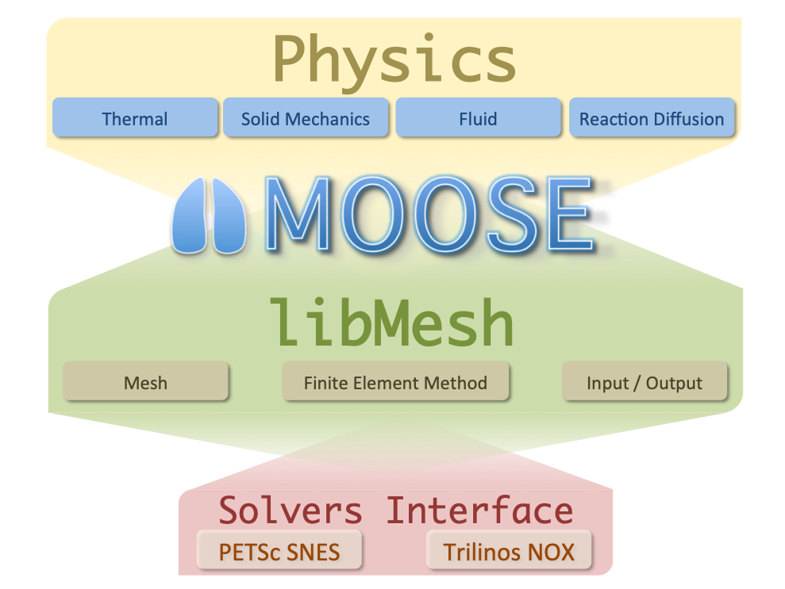

Framework System Design Description
This template follows INL template TEM-140, "IT System Design Description."
Introduction
Frameworks are a software development construct aiming to simplify the creation of specific classes of applications through abstraction of low-level details. The main objective of creating a framework is to provide an interface to application developers that saves time and provides advanced capabilities not attainable otherwise. The MOOSE mission is just that: provide a framework for engineers and scientists to build state-of-the-art, computationally scalable finite element or finite volume based simulation tools.
MOOSE was conceived with one major objective: to be as easy and straightforward to use by scientists and engineers as possible. MOOSE is meant to be approachable by non-computational scientists who have systems of partial differential equations (PDEs) they need to solve. Every single aspect of MOOSE was driven by this singular principle from the build system to the API to the software development cycle. At every turn, decisions were made to enable this class of users to be successful with the framework. The pursuit of this goal has led to many of the unique features of MOOSE:
A streamlined build system
An API aimed at extensibility
Straightforward APIs providing sensible default information
Integrated, automatic, and rigorous testing
Rapid, continuous integration development cycle
Codified, rigorous path for contributing
Applications are modular and composable
Each of these characteristics is meant to build trust in the framework by those attempting to use it. For instance, the build system is the first thing potential framework users come into contact with when they download a new software framework. Onerous dependency issues, complicated, hard to follow instructions or build failure can all result in a user passing on the platform. Ultimately, the decision to utilize a framework comes down to whether or not you trust the code in the framework and those developing it to be able to support your desired use-case. No matter the technical capabilities of a framework, without trust users will look elsewhere. This is especially true of those not trained in software development or computational science.
Developing trust in a framework goes beyond utilizing "best practices" for the code developed, it is equally important that the framework itself is built upon tools that are trusted. For this reason, MOOSE relies on a well-established code base of libMesh and PETSc. The libMesh library provides foundational capability for the finite element method and provides interfaces to leading-edge numerical solution packages such as PETSc.
With these principles in mind, an open source, massively parallel, finite element, multiphysics framework has been conceived. MOOSE is an on-going project started in 2008 aimed toward a common platform for creation of new multiphysics tools. This document provides design details pertinent to application developers as well as framework developers.
Use Cases
The MOOSE Framework is targeted at two main groups of actors: Developers and Users. Developers are the main use case. These are typically students and professionals trained in science and engineering fields with some level of experience with coding but typically very little formal software development training. The other user group is Users. Those who intend to use an application built upon the framework without writing any computer code themselves. Instead they may modify or create input files for driving a simulation, run the application, and analyze the results. All interactions through MOOSE are primarily through the command-line interface and through a customizable block-based input file.
System Purpose
The Software Design Description provided here is description of each object in the system. The pluggable architecture of the framework makes MOOSE and MOOSE-based applications straightforward to develop as each piece of end-user (developer) code that goes into the system follows a well-defined interface for the underlying systems that those object plug into. These descriptions are provided through developer-supplied "markdown" files that are required for all new objects that are developed as part of the framework, modules and derivative applications. More information about the design documentation can be found in Documenting MOOSE.
System Scope
The purpose of this software is to provide several libraries that can be used to build an application based upon the framework. Additionally, several utilities are provided for assisting developers and users in end-to-end FEM analysis. A brief overview of the major components are listed here:
| Component | Description |
|---|---|
| framework library | The base system from which all MOOSE-based applications are created |
| module libraries | Optional "physics" libraries that may be used in an application to provide capability |
| build system | The system responsible for creating applications for a series of libraries and applications |
| test harness | The extendable testing system for finding, scheduling, running, and reporting regression tests |
| "peacock" | The graphical user interface (GUI) for building input files, executing applications, and displaying results |
| MooseDocs | The extendable markdown system for MOOSE providing common documentation and requirements enforcement |
| "stork" | The script and templates for generating a new MOOSE-based application ready for building and testing |
| examples | A set of complete applications demonstrating the use of MOOSE's pluggable systems |
| tutorials | Step by step guides to building up an application using MOOSE's pluggable systems |
| unit | An application for unit testing individual classes or methods of C++ code |
Dependencies and Limitations
The MOOSE platform has several dependencies on other software packages and has scope that is constantly evolving based upon funding, resources, priorities, and lab direction. However, the software is open-source and many features and even bugs can be offloaded to developers with appropriate levels of knowledge and direction from the main design team. The primary list of software dependencies is listed below. This list is not meant to be exhaustive. Individual operating systems may require specific packages to be installed prior to using MOOSE, which can be found on the Install MOOSE pages.
| Software Dependency | Description |
|---|---|
| libMesh | Finite Element Library and I/O routines |
| PETSc | Solver Package |
| hypre | Multigrid Preconditioner |
| MPI | A distributed parallel processing library (MPICH) |

Figure 1: A diagram of the MOOSE code platform.
Definitions and Acronyms
This section defines, or provides the definition of, all terms and acronyms required to properly understand this specification.
Definitions
Pull (Merge) Request: A proposed change to the software (e.g. usually a code change, but may also include documentation, requirements, design, and/or testing).
Baseline: A specification or product (e.g., project plan, maintenance and operations (M&O) plan, requirements, or design) that has been formally reviewed and agreed upon, that thereafter serves as the basis for use and further development, and that can be changed only by using an approved change control process (NQA-1, 2009).
Validation: Confirmation, through the provision of objective evidence (e.g., acceptance test), that the requirements for a specific intended use or application have been fulfilled (24765:2010(E), 2010).
Verification: (1) The process of: evaluating a system or component to determine whether the products of a given development phase satisfy the conditions imposed at the start of that phase. (2) Formal proof of program correctness (e.g., requirements, design, implementation reviews, system tests) (24765:2010(E), 2010).
Acronyms
| Acronym | Description |
|---|---|
| API | Application Programming Interface |
| DOE-NE | Department of Energy, Nuclear Energy |
| FE | finite element |
| FEM | Finite Element Method |
| GUI | graphical user interface |
| HIT | Hierarchical Input Text |
| HPC | High Performance Computing |
| I/O | Input/Output |
| INL | Idaho National Laboratory |
| MOOSE | Multiphysics Object Oriented Simulation Environment |
| MPI | Message Passing Interface |
| PDEs | partial differential equations |
Design Stakeholders and Concerns
Design Stakeholders
Stakeholders for MOOSE include several of the funding sources including DOE-NE and the INL. However, Since MOOSE is an open-source project, several universities, companies, and foreign governments have an interest in the development and maintenance of the MOOSE project.
Stakeholder Design Concerns
Concerns from many of the stakeholders are similar. These concerns include correctness, stability, and performance. The mitigation plan for each of these can be addressed. For correctness, MOOSE development requires either regression or unit testing for all new code added to the repository. The project contains several comparisons against analytical solutions where possible and also other verification methods such as MMS. For stability, MOOSE maintains multiple branches to incorporate several layers of testing both internally and for dependent applications. Finally, performance tests are also performed as part of the normal testing suite to monitor code change impacts to performance.
System Design
The MOOSE framework itself is composed of a wide range of pluggable systems. Each system is generally composed of a single or small set of C++ objects intended to be specialized by a Developer to solve a specific problem. To accomplish this design goal, MOOSE uses several modern object-oriented design patterns. The primary overarching pattern is the "Factory Pattern". Users needing to extend MOOSE may inherit from one of MOOSE's systems to providing an implementation meeting their needs. The design of each of these systems is documented on the MOOSE homepage. Additionally, up-to-date documentation extracted from the source is maintained on the same documentation site after every successful merge to MOOSE's stable branch. After these objects are created, they can be registered with the framework and used immediately in a MOOSE input file.
System Structure
The MOOSE framework architecture consists of a core and several pluggable systems. The core of MOOSE consists of a number of key objects responsible for setting up and managing the user-defined objects of a finite element simulation. This core set of objects has limited extendability and exist for every simulation configuration that the framework is capable of running.
ActionComponents
Adaptivity
Adaptivity/Indicators
Adaptivity/Markers
Application
AuxKernels
AuxKernels/MatVecRealGradAuxKernel
AuxKernels/MaterialVectorAuxKernel
AuxKernels/MaterialVectorGradAuxKernel
AuxScalarKernels
AuxVariables
AuxVariables/MultiAuxVariables
BCs
BCs/CavityPressure
BCs/CoupledPressure
BCs/InclinedNoDisplacementBC
BCs/Periodic
BCs/Pressure
Bounds
ChainControls
Constraints
Controls
Convergence
Correctors
DGKernels
Dampers
Debug
Debug/MaterialDerivativeTest
DeprecatedBlock
DiracKernels
Distributions
DomainIntegral
Executioner
Executioner/Adaptivity
Executioner/Predictor
Executioner/Quadrature
Executioner/TimeIntegrator
Executioner/TimeIntegrators
Executioner/TimeStepper
Executioner/TimeSteppers
Executors
FVBCs
FVICs
FVInterfaceKernels
FVKernels
Functions
FunctorMaterials
GlobalParams
GrayDiffuseRadiation
HDGKernels
ICs
ICs/PolycrystalICs
ICs/PolycrystalICs/BicrystalBoundingBoxIC
ICs/PolycrystalICs/BicrystalCircleGrainIC
ICs/PolycrystalICs/PolycrystalColoringIC
ICs/PolycrystalICs/PolycrystalRandomIC
ICs/PolycrystalICs/PolycrystalVoronoiVoidIC
ICs/PolycrystalICs/Tricrystal2CircleGrainsIC
InterfaceKernels
Kernels
Kernels/CHPFCRFFSplitKernel
Kernels/DynamicSolidMechanics
Kernels/DynamicTensorMechanics
Kernels/HHPFCRFFSplitKernel
Kernels/PFCRFFKernel
Kernels/PolycrystalElasticDrivingForce
Kernels/PolycrystalKernel
Kernels/PolycrystalStoredEnergy
Kernels/PoroMechanics
Kernels/RigidBodyMultiKernel
Kernels/SolidMechanics
Kernels/TensorMechanics
LinearFVBCs
LinearFVKernels
Materials
Mesh
Mesh/BatchMeshGeneratorAction
Mesh/Partitioner
MeshDivisions
MeshModifiers
Modules
Modules/PhaseField
Modules/PhaseField/Conserved
Modules/PhaseField/DisplacementGradients
Modules/PhaseField/EulerAngles2RGB
Modules/PhaseField/GrainGrowth
Modules/PhaseField/GrainGrowthLinearizedInterface
Modules/PhaseField/GrandPotential
Modules/PhaseField/Nonconserved
Modules/TensorMechanics
Modules/TensorMechanics/CohesiveZoneMaster
Modules/TensorMechanics/DynamicMaster
Modules/TensorMechanics/GeneralizedPlaneStrain
Modules/TensorMechanics/GlobalStrain
Modules/TensorMechanics/LineElementMaster
Modules/TensorMechanics/Master
Modules/TensorMechanics/MaterialVectorBodyForce
MortarGapHeatTransfer
MultiApps
NEML2
NodalKernels
NodalNormals
Outputs
Physics
Physics/Diffusion
Physics/Diffusion/ContinuousGalerkin
Physics/Diffusion/FiniteVolume
Physics/HeatConduction
Physics/HeatConduction/FiniteElement
Physics/HeatConduction/FiniteVolume
Physics/SolidMechanics
Physics/SolidMechanics/CohesiveZone
Physics/SolidMechanics/Dynamic
Physics/SolidMechanics/GeneralizedPlaneStrain
Physics/SolidMechanics/GlobalStrain
Physics/SolidMechanics/LineElement
Physics/SolidMechanics/LineElement/QuasiStatic
Physics/SolidMechanics/MaterialVectorBodyForce
Physics/SolidMechanics/QuasiStatic
Positions
Postprocessors
Preconditioning
Problem
ProjectedStatefulMaterialStorage
RayBCs
RayKernels
Reporters
Samplers
ScalarKernels
ThermalContact
Times
Transfers
UserObjects
Variables
Variables/CHPFCRFFSplitVariables
Variables/HHPFCRFFSplitVariables
Variables/PFCRFFVariables
Variables/PolycrystalVariables
VectorPostprocessors
The MooseApp is the top-level object used to hold all of the other objects in a simulation. In a normal simulation a single MooseApp object is created and "run()". This object uses its Factory objects to build user defined objects which are stored in a series of Warehouse objects and executed. The Finite Element data is stored in the Systems and Assembly object while the domain information (the Mesh) is stored in the Mesh object. A series of threaded loops are used to run parallel calculations on the objects created and stored within the warehouses.
MOOSE's pluggable systems are documented on https://mooseframework.inl.gov. Each of these systems has a set of defined polymorphic interfaces and are designed to accomplish a specific task within the simulation. The design of these systems is fluid and is managed through agile methods and ticket request system on the MOOSE repository website.
Data Design and Control
At a high level, the system is designed to process HIT input files to construct several objects that will constitute an FE simulation. Some of the objects in the simulation may in turn load other file-based resources to complete the simulation. Examples include meshes or data files. The system will then assemble systems of equations and solve them using the libraries of the Code Platform. The system can then output the solution in one or more supported output formats commonly used for visualization.
Human-Machine Interface Design
MOOSE is a command-line driven program. All interaction with MOOSE and MOOSE-based codes is ultimately done through the command line. This is typical for HPC applications that use the MPI interface for running on super computing clusters. Optional GUIs may be used to assist in creating input files and launching executables on the command line.
System Design Interface
All external system interaction is performed either through file I/O or through local API calls. Neither the framework, nor the modules are designed to interact with any external system directly through remote procedure calls. Any code to code coupling performed using the framework are done directly through API calls either in a static binary or after loading shared libraries.
Security Structure
The framework does not require any elevated privileges to operate and does not run any stateful services, daemons or other network programs. Distributed runs rely on the MPI library.
Requirements Cross-Reference
!sqa cross-reference category=framework